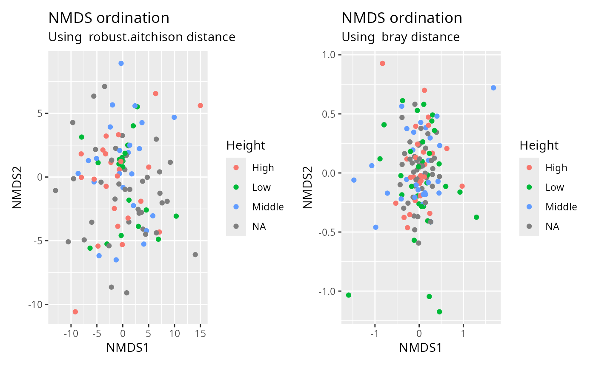
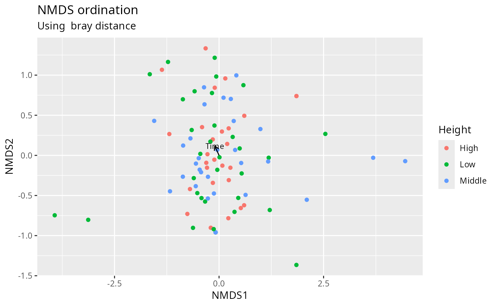

A wrapper of plot_ordination with vegan distance matrix
Source:R/plot_functions.R
plot_ordination_pq.RdA wrapper of plot_ordination with vegan distance matrix
Usage
plot_ordination_pq(
physeq,
method = "robust.aitchison",
ordination_method = "NMDS",
add_envfit = FALSE,
envfit_fact = NULL,
envfit_pval = 1,
envfit_arrow_mult = 1,
envfit_text_size = 3,
envfit_col = "black",
...
)Arguments
- physeq
(required) a
phyloseq-classobject obtained using thephyloseqpackage.- method
(string, default "robust.aitchison") The distance method to use from vegan::vegdist(). See ?vegan::vegdist for more details.
- ordination_method
(string, default "NMDS") The ordination method to use in phyloseq::ordinate(). See ?phyloseq::ordinate for more details.
- add_envfit
(logical, default FALSE) If TRUE, overlay environmental vectors (and factor centroids) fitted to the ordination using
vegan::envfit(). Continuous variables are shown as arrows and factor variables as labelled centroids.- envfit_fact
(default NULL) A character vector of variable names from
physeq@sam_datato fit onto the ordination. When NULL (default) andadd_envfit = TRUE, every variable ofphyseq@sam_datais used; passing an explicit subset is recommended, as fitting identifier or high-cardinality character columns produces a cluttered overlay.- envfit_pval
(float, default 1) Only environmental variables with an
vegan::envfit()p-value lower than or equal to this threshold are drawn. The default (1) draws all of them.- envfit_arrow_mult
(float, default 1) A multiplier applied to the environmental arrow lengths, to scale them for readability.
- envfit_text_size
(float, default 3) Text size for the environmental variable labels.
- envfit_col
(default "black") Color of the environmental arrows, centroids and labels.
- ...
Additional arguments passed on to phyloseq::plot_ordination()
Details
Basically a wrapper of phyloseq::plot_ordination() to use aitchison and
robust.aitchison distances from vegan package.
Examples
library(patchwork)
plot_ordination_pq(data_fungi_mini, method = "robust.aitchison", color = "Height") +
plot_ordination_pq(data_fungi_mini, method = "bray", color = "Height")
#> Taxa are now in columns.
#> Run 0 stress 0.115973
#> Run 1 stress 0.1182422
#> Run 2 stress 0.1266062
#> Run 3 stress 0.1178904
#> Run 4 stress 0.1267024
#> Run 5 stress 0.1329577
#> Run 6 stress 0.1493641
#> Run 7 stress 0.1345396
#> Run 8 stress 0.1214999
#> Run 9 stress 0.1503438
#> Run 10 stress 0.1222307
#> Run 11 stress 0.1241997
#> Run 12 stress 0.1187081
#> Run 13 stress 0.1266064
#> Run 14 stress 0.1328137
#> Run 15 stress 0.1325368
#> Run 16 stress 0.1183097
#> Run 17 stress 0.1159623
#> ... New best solution
#> ... Procrustes: rmse 0.001485019 max resid 0.01705424
#> Run 18 stress 0.1254494
#> Run 19 stress 0.1628668
#> Run 20 stress 0.1310702
#> *** Best solution was not repeated -- monoMDS stopping criteria:
#> 1: no. of iterations >= maxit
#> 13: stress ratio > sratmax
#> 6: scale factor of the gradient < sfgrmin
#> Warning: `aes_string()` was deprecated in ggplot2 3.0.0.
#> ℹ Please use tidy evaluation idioms with `aes()`.
#> ℹ See also `vignette("ggplot2-in-packages")` for more information.
#> ℹ The deprecated feature was likely used in the phyloseq package.
#> Please report the issue at <https://github.com/joey711/phyloseq/issues>.
#> Taxa are now in columns.
#> Run 0 stress 0.1894178
#> Run 1 stress 0.1882218
#> ... New best solution
#> ... Procrustes: rmse 0.08152137 max resid 0.2747556
#> Run 2 stress 0.1927641
#> Run 3 stress 0.1886643
#> ... Procrustes: rmse 0.07737944 max resid 0.2843688
#> Run 4 stress 0.195108
#> Run 5 stress 0.1923016
#> Run 6 stress 0.1906697
#> Run 7 stress 0.1896367
#> Run 8 stress 0.189772
#> Run 9 stress 0.1858454
#> ... New best solution
#> ... Procrustes: rmse 0.06737013 max resid 0.3737225
#> Run 10 stress 0.1908816
#> Run 11 stress 0.1876594
#> Run 12 stress 0.1884765
#> Run 13 stress 0.1886794
#> Run 14 stress 0.1885621
#> Run 15 stress 0.1847356
#> ... New best solution
#> ... Procrustes: rmse 0.03545373 max resid 0.1712844
#> Run 16 stress 0.1890934
#> Run 17 stress 0.1913745
#> Run 18 stress 0.1902773
#> Run 19 stress 0.1889748
#> Run 20 stress 0.1859108
#> *** Best solution was not repeated -- monoMDS stopping criteria:
#> 15: no. of iterations >= maxit
#> 5: stress ratio > sratmax

# \donttest{
plot_ordination_pq(
subset_samples(data_fungi_mini, !is.na(Height)),
method = "bray",
color = "Height",
add_envfit = TRUE,
envfit_fact = "Time"
)
#> Taxa are now in columns.
#> Run 0 stress 0.1519287
#> Run 1 stress 0.1508631
#> ... New best solution
#> ... Procrustes: rmse 0.09122668 max resid 0.4445868
#> Run 2 stress 0.1532849
#> Run 3 stress 0.1530157
#> Run 4 stress 0.1532937
#> Run 5 stress 0.153886
#> Run 6 stress 0.152101
#> Run 7 stress 0.1498946
#> ... New best solution
#> ... Procrustes: rmse 0.0720535 max resid 0.2401002
#> Run 8 stress 0.1544506
#> Run 9 stress 0.1528606
#> Run 10 stress 0.1492973
#> ... New best solution
#> ... Procrustes: rmse 0.05207197 max resid 0.1953924
#> Run 11 stress 0.1496068
#> ... Procrustes: rmse 0.05413385 max resid 0.2034079
#> Run 12 stress 0.1525739
#> Run 13 stress 0.1523151
#> Run 14 stress 0.1501994
#> Run 15 stress 0.151421
#> Run 16 stress 0.1532906
#> Run 17 stress 0.1509411
#> Run 18 stress 0.1483737
#> ... New best solution
#> ... Procrustes: rmse 0.02046957 max resid 0.09522164
#> Run 19 stress 0.1527563
#> Run 20 stress 0.149168
#> *** Best solution was not repeated -- monoMDS stopping criteria:
#> 17: no. of iterations >= maxit
#> 3: stress ratio > sratmax

# }